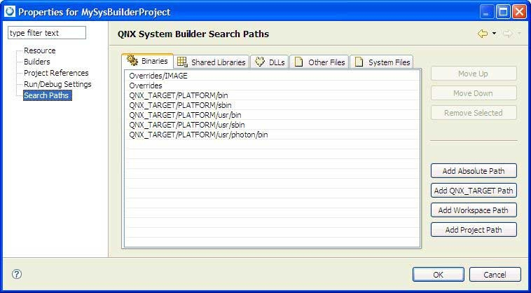

The Search Paths pane lets you configure where the IDE looks for
the files you specified in your project.bld file:

The IDE provides separately configurable search paths for:
- binaries
- shared libraries
- DLLs
- other files
- system files
To add a search path:
- In the System Builder Projects view, right-click your project and
select Properties.
- In the left pane, select Search Paths.
- In the right pane, select one of the following tabs:
-
Binaries
-
Shared Libraries
-
DLLs
-
Other Files
-
System Files
- Click one of the following buttons:
- Add Absolute Path — a hard-coded path
- Add QNX_TARGET Path — a path with a
$QNX_TARGET prefix
- Add Workspace Path — a path with a
$WORKSPACE prefix
- Add Project Path — a path with a
$WORKSPACE/projectName prefix
Another dialog appears.
- Select your path or project and click OK. The IDE adds your
path to the end of the list.